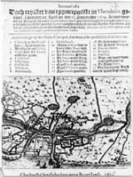
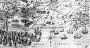
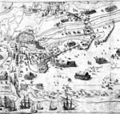
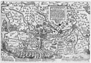
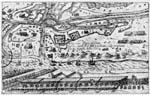
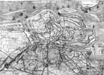
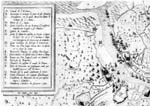
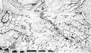

OOSTENDE VERLOREN, SLUIS GEWONNEN, 1604
Tentoonstelling in de Universiteitsbibliotheek van 12 augustus - 12
september 2004
Samenstelling: Dirk de Vries
Met bijdragen van Charles van den Heuvel, Anton van der Lem en Piet Lombaerde
Beeldkroniek 2
6 Broer Jansz., 1604
[Sluis en omgeving tijdens het beleg van 1604]. - Amsterdam : Broer Jansz., 1604. - Ets; 10,5 x 14,5 cm.
Zonder titel. Niet gesigneerd. Zonder schaalaanduiding. Zuid boven.
Het kaartje is afgebeeld op de titelpagina van een pamflet met de titel: Iournael ofte Dach-register van ‘t principaelste in Vlaenderen geschiet, sedert den 25. April tot den 15. September 1604, en met het impressum: Ghedruct t’Amstelredam voor Broer Iansz. 1604. Het is bedoeld om de lezer snel een indruk te geven van de topografischstrategische situatie ter plaatse.
¶ Dit vlugschrift van 22 pagina’s bevat het ooggetuigeverslag van het beleg en is geschreven door Broer Jansz. (1580-1652), een in Amsterdam gevestigde uitgever, die vooral bekendheid heeft gekregen omdat hij vanaf 1618 ‘couranten’ liet verschijnen, het begin van de geregelde nieuwsvoorziening. Een jaar nadat hij als uitgever was begonnen, toog hij als journalist naar het verre Vlaanderen om daar de strijd om Sluis van nabij mee te maken en te verslaan, volgens zijn eigen zeggen vanuit het legerkamp van Prins Maurits. In een pamflet uit 1619 noemde hij zich Oud-Courantier in het legher van S. Princ. Exc. De schrijver sluit zijn verhaal af na de capitulatie van Sluis, maar vier dagen voor de overgave van Oostende aan de Aartshertogen en daarmee is niet alleen de actualiteit van de tekst gegarandeerd maar ook die van de inhoud van de kaart. De Hullu maakte dankbaar gebruik van dit relaas voor zijn geschiedenis van de verovering van het Land van Cadzand door Prins Maurits, dat hij bij de driehonderdjarige herdenking ervan in 1904 uitgaf.
In het kleine formaat van dit ruw geëtste kaartje is een vrij groot gebied gecomprimeerd. Met Sluis daarin centraal gelegen geeft het weliswaar summier maar des te indringender het strijdtoneel van schansen en legerplaatsen te midden van geïnundeerd gebied. Iedere beschrifting ontbreekt, slechts een moeilijk leesbare nummering van 1-25 verwijst naar de legenda, die erboven in boekdruk is weergegeven.
Ref.: Muller 1214A, Knuttel 1276.
Lit.: de Hullu (1904).
Loc.: UB Leiden, Thyspf 1263; KB Den Haag Knuttel 1276.
|  | Broer Jansz., 1604. |
7 Keller I, 1604
[De veldtocht van Prins Maurits in Vlaanderen in 1604 met het beleg van Sluis / gegraveerd door] G. Keller. - Frankfurt a.M.: Sigismund Latomi, 1604. - Ets; 22 x 36 cm.
Zonder titel. Gesigneerd rechtsonder. Zonder schaalaanduiding. Zuid boven, windroos.
¶ Deze kaart komt, evenals de volgende, voor in de te Frankfurt a.M. in 1604 uitgegeven nieuwstijding Mercurii Gallobelgici Sleidano succenturiati sive rerum in Gallia et Belgio […] gestarum […] narrationis. Tomus quintus, waaraan de naam van Gotardus Arthus uit Danzig als samensteller is verbonden. Daarin werden de politieke en militaire gebeurtenissen in de Lage Landen van het tweede en derde kwartaal van 1604 op de voet gevolgd. Zo kreeg ook de veldtocht van 1604 de nodige aandacht, welk bericht met twee nieuwskaarten werd geïllustreerd. De eerste laat het gehele oorlogsgebied zien, van Vlissingen tot en met het belegerde Oostende, en voor de tekening ervan heeft Keller de grote prent van Balthasar nagevolgd. De op de kaart voorkomende kapitalen A tot en met Z en Aa verwijzen naar de verklaring die in de erbij horende, in het Latijn gestelde nieuwstijding op de pagina’s 180 en 181 wordt gegeven: In delineatione expeditionis A litera Vlissinga civitas est, a qua Mauritius expeditione facturus solvit B portus est, que(m) angulum nigrum [Zwarte Gat] vocant [...] D Isendica est castellum fortissimum, quod in civitatem convertere maritimam, mercatores nuper Sela(n)dici coeperunt [...]. De nauwe relatie tussen actuele berichtgeving in woord (pamfletten) en beeld (nieuwskaarten) wordt nog eens onderstreept door een verwijzing in een Duitstalig pamflet over het beleg van Sluis naar deze twee kaarten. In de te Middelburg bij Richard Schilders verschenen Gründtliche Erzehlung, waarin het verhaal van het beleg tot 20 mei 1604 loopt, lezen we: ‘Was nuhn weiter sich verlauffen wird hat der günstige Leser nechst künfftige Franckfurter Herbstmesse indess Meurers und Francken Relation sampt den Kupferstücken bey Sigismundo Latomo Buchtrucker zu Franckfurt am Mayn weitlaufftiger zu gewarten’. De verbindingslijnen tussen de uitgevers waren kort: Schilders uit Middelburg wist in de zomer van 1604 wat er over twee maanden in Frankfurt in de Mercurius zou verschijnen.
Van Georg Keller (1568-1634), leerling van de beroemde Jost Ammann uit Nürnberg en als graveur gevestigd te Frankfurt a.M., is betrekkelijk veel werk bewaard, voornamelijk boekillustraties. In de catalogi van de Frankfurter Buchmesse komen we zijn naam in de jaren 1595-1628 dan ook regelmatig tegen. Zijn vlotte en luchtige graveerstijl vinden we ook terug in deze kaart en de volgende die hij voor de bij Sigismund Latomi verschenen Mercurius Gallobelgicus van 1604 heeft gemaakt.
In: Mercurii Gallobelgici Sleidano succenturiati sive rerum in Gallia et Belgio […] gestarum […] narrationis. Tomus quintus. Frankfurt a.M.: Sigismund Latomi, 1604.
Lit.: Voor Keller zie Thieme-Becker, 20. B. (1927), pp. 101, 102 en Hollstein’s German engravings, vol. XVI (1975), pp. 19-40. Beide werken verwijzen echter niet naar Keller’s bijdrage aan de Mercurius Gallobelgicus. Het hier vermelde, te Middelburg uitgegeven pamflet berust in de Koninklijke Bibliotheek te Den Haag, Knuttel 1267.
Loc.: UB Leiden, in 663 H 4
|  | Keller I, 1604 (detail). |
8 Keller II, 1604
[De belegering van Sluis in 1604 / gegraveerd door] G. Keller 1604. - [Frankfurt a.M. : Sigismund Latomi, 1605]. - Ets; 18 x 29,5 cm. Met prent onder de kaart 24 x 29,5 cm.
Zonder titel. Gesigneerd en gedateerd linksonder. Zonder schaalaanduiding. Zuid boven.
¶ Deze kaart, die in dezelfde aflevering van de Mercurius Gallobelgicus voorkomt als de voorafgaande, toont het laatste stadium van het beleg: de overgave en de uittocht van de Spaanse bezetting.
De ruiterwachtfiguurtjes en de wijze waarop de stormbrug op de prent onder de kaart is afgebeeld, namelijk van rechts gezien, geven aan dat als voorbeeld voor de topografische tekening èn voor de historische afbeelding de onder nummer 2 beschreven nieuwskaart in grote lijnen is nagevolgd, echter in deze zin geactualiseerd dat, terwijl het voorbeeld het beleg in een beginfase laat zien, deze kaart bij nummer 41 de afloop toont, de overgave en de uittocht van de Spaanse bezettingsmacht.
Ook hier worden de in het kaartbeeld geplaatste nummers 1 t/m 41 niet op de kaart maar in de begeleidende tekst van boekje verklaard, op de pagina’s 181 en 182: In obsidione Slusensis delineatione 1. statione(m) Mauritii & Comitis Henrici denotat 2. statione(m) Comitum Ludovici & Guilielmi [...] 41 Decessum Hispanorum denotat.
In: Mercurii Gallobelgici Sleidano succenturiati sive rerum in Gallia et Belgio […] gestarum […] narrationis. Tomus quintus. Frankfurt a.M.: Sigismund Latomi, 1604.
Ref.: Muller 1213.
Lit.: zie onder nr. 7.
Loc.: UB Leiden, in 663 H 4; RPK Amsterdam, FM 1213.
|  | Keller II, 1604 (detail). |
9 Hogenberg II, 1604
FLANDRIA BOREALIS Eigentliche Verzeichnus der Graefschafft Flandern, wie dieselbige vff der kanten ins NordOosten gege(n) Selant zu gelegen, an welchem ort die Statische Armey ihren ersten einfall gethan mit beigefugter Narration oder erzehlung was sich von anfang Maiens vff jeder platzen zugetragen. Im Iahr Christi 1604. / [gegraveerd door Matthias Quad]. - [Köln: s.n., ca. 1605]. - Ets en gravure; 23 x 33,5 cm.
Titel in omlijsting rechtsboven met daaronder de schaalaanduiding: Dieser strich hat die lenge einer kleiner Flamischen meilen (= 3,8 cm). Niet gedateerd. Zuid boven, windroos; onder de prent in vier kolommen van elk vier regels Duitse toelichtende tekst in gravure: ....dem Leger vor Ostend | ....Spürten gar kein end | ....diss Iahr ein grosse Macht | ...vnd volck zusamen brach [...].
¶ Twee keer komt de veldtocht van 1604 in de historieprenten van Hogenberg voor. Naast de onder nummer 1 beschreven eigenlijke belegering van Sluis, toont deze een groter gebied. Naar alle waarschijnlijkheid heeft de kaart van Keller (nr. 7) als voorbeeld gediend, die op haar beurt, zoals we zagen, weer door Floris Balthasar’s grote kaart van de Tocht door Vlaanderen in 1600 is geinspireerd. Beide kaarten nemen in deze reeks een bijzondere plaats in, omdat ze als enige het kaartbeeld tot en met Oostende uitbreiden en daarmee de veldtocht van 1604 ook cartografisch in het perspectief plaatsen van een poging tot ontzet van deze vesting, waarnaar de kaart van Hogenberg ook in de tekst onderaan verwijst.
Op basis van stijlkenmerken is de gravure onmiskenbaar toe te schrijven aan de in Deventer geboren Matthias Quad (1557-1613), die voordat hij vanaf 1587 in Keulen als graveur van kaarten en maker van een atlas werkzaam was, veel door Noordwest-Europa had gereisd en daarbij ook de Nederlanden aandeed, waar hij waarschijnlijk in de werkplaatsen van de Van Doetecums en van Hendrik Goltzius zijn opleiding genoot. Hellwig stelt vast dat zijn betrekking met de historieplaten van Hogenberg tweezijdig is geweest, als graveur èn als maker van de toegevoegde teksten, hoewel hij nergens als zodanig is vermeld.
De kaart toont het gebied van het strijdtoneel in 1604 in Noordwest-Vlaanderen. Onder in de prent ligt de vloot onder zeil voor Cadsant en het Sluiser gat en vervolgens zijn in een robuuste gravure de andere fasen van de expeditie van Maurits te zien, IJzendijke, Aardenburg en rond Sluis, waar in het midden van de afbeelding de legereenheden zich samentrekken. Het geschiedverhaal waarnaar in onderstaande tekst met de woorden Was sonst mit Sluis sich zugetragen, Wirdt beigefugte Histori zagen wordt verwezen, zou kunnen slaan op Von Aitzing’s De leone belgico, waarin de kaart volgens Hellwig ook voorkomt. Bijzondere aandacht verdient de toelichting rechtsonder op de toepassing van verschillende schalen buiten en binnen de op de kaart getrokken lijnen.
Ref.: Muller 415, nr. 340; Hellwig nr. 372; Kinds (1999) nr. 372; de Ghein (1994), nr. 45.
Lit.: de Hullu (1604); Hellwig (1983), toelichting passim; Meurer (1984), pp. 6-11.
Loc.: UB Leiden, in Bibl. Thys. 1445, nr. 286; AvS Rotterdam, in S.1560, nr. 91.
|  | Hogenberg II, 1604 10 Anoniem II, 1604. |
10 Anoniem II, ca. 1605
t Beleg voor Sluys geschiet den 25 April door syn Excellentie, ende verrovert den 19 Augusti Anno 1604. - [S.l.: s.n., ca. 1605]. - Ets ; 7 x 15 cm. Met prent onder de kaart 9,5 x 15 cm.
Titel in het midden van de afbeelding, zonder omlijsting. Niet gesigneerd, noch gedateerd. Zonder schaalaanduiding. Zuid boven.
¶ Grof geëtste en sterk verkleinde kopie van de onder nummer 2 beschreven nieuwskaart van het krijgsterrein rondom Sluis. Onder de kaart de afbeelding van de stormbrug van rechts gezien, met opschrift Stormbrugge gemaeckt voor Sluys 32 delen lanck. De herkomst van dit kaartje, waarvan mij tot nu toe geen tweede exemplaar bekend is, kon niet worden vastgesteld. Te klein om als losbladige uitgave te zijn verschenen, zal het waarschijnlijk als illustratie in een pamflet zijn opgenomen, evenals het kaartje van Broer Jansz, dat ongeveer hetzelfde formaat heeft.
Loc.: UB Leiden, CollBN P37 N77.
|  | Anoniem II, ca. 1605. |
11.1 Horenbault, 1605
Carte figuratiue van(de) stadt van Sluus metten omligghe(nde) Steden en(de) plaetsen zoo die nu zijn Teghenwordich ghemaeckt naer de Conste = Carte figuratiue de la Ville de lescluse auecq les Villes et lieux Circonuoysins com(m)e a present elles setrouuent faict selon lart de Geographi | Jaques horenbault fecit et excud: 1605: Gandavi. - Gent: J. Horenbault, 1605. - Ets en gravure; 31 x 42 cm.
Titel, privilege en impressum linksonder in geornamenteerd paneeltje. Twee op elkaar liggende schaalstokken met passer daar boven: Eschale de deux lieu de flandre en twee Mijlen (= 10,9 cm) en 2800 Roen (= 9,7 cm). Noord boven, windroos. Privilege: Auecq Previlege de ne les pouuoir contrefaire en dedans | six ans prochains venans sur les paines et amendes | y contenes.
¶ Jacques Horenbault stamt uit een Gents geslacht waarvan vier generaties zich als landmeter, cartograaf, graveur en schilder in de zestiende en begin zeventiende eeuw met het maken van kaarten bezighielden. Van vader François (? – 1599) en diens zoon Jacques (geboorte- en sterfjaar onbekend) zijn de meeste kaarten bewaard gebleven. De Leeuw geeft voor hen beiden een opsomming van resp. twaalf en negen kaarten, waarbij ze in de laatste lijst de kaart van de Vlaamse kuststreek van Blankenberge tot Bergen op Zoom uit ca. 1620 over het hoofd heeft gezien. In het bewaard gebleven cartografisch oeuvre van vader en zoon Horenbault ligt een duidelijk accent op het Vlaamse land, met als hoogtepunt de plattegrond van Gent uit 1619. Zowel het oostelijk als het westelijk deel van het latere Staats-Vlaanderen zijn daarin met zeven kaarten goed vertegenwoordigd.
De veranderde topografische en militaire situatie na het beleg en de inname van Sluis, in de titel aangegeven met zoo die nu zijn, was voor Jacques Horenbault voldoende reden om die in een kaart vast te leggen, waarin hij een betrekkelijk groot gebied opneemt dat zich uitstrekt van Blankenberge tot Sas van Gent en van Vlissingen tot Waarschoot. Voor zover onze kennis gaat en wij zicht kunnen hebben op de cartografie van dit deel van Vlaanderen in het begin van de zeventiende eeuw, kunnen we niet anders oordelen dan dat Horenbault in deze kaart een origineel werkstuk van de eerste orde heeft vervaardigd. Nog niet eerder was de door oorlog sterk gewijzigde topografie zo nauwkeurig weergegeven. Dat Horenbault in dit geval niet alleen als graveur maar ook als landmeter en cartograaf mag worden aangewezen, pleit het volgende. Het is vooral in deze hoedanigheden dat hij in zijn overige kaarten tot ons komt, waaruit bovendien blijkt dat hij juist in deze contreien actief is geweest. Een mogelijke concrete aanwijzing van zijn waarnemingen ter plaatse is een getekende schetskaart van dit gebied, die aan hem wordt toegeschreven en in het Zeeuws Archief berust. Daarnaast moet niet worden uitgesloten dat hij gebruik heeft gemaakt van gegevens van de kaart van het Brugse Vrije door Pieter Pourbus (1571) of, wat waarschijnlijker is, van de kopie hiervan door Pieter Claeissens uit 1601.
Deze kaart is in drie exemplaren bewaard gebleven, waarvan er één in de gravure belangrijke, door De Leeuw niet onderkende, wijzigingen heeft ondergaan, die hierna onder 11.2 de aandacht krijgen. Tijdens het Twaalfjarig Bestand, omstreeks 1615, hebben Jodocus en Henricus Hondius, uitgevers te Amsterdam, een gekopieerde en geheel opnieuw gegraveerde versie op de markt gebracht (zie nr. 16).
Wat het inhoudelijke commentaar betreft beperk ik mij tot de directe omgeving van Sluis. Het is daar nog altijd oorlog. De inundaties in de oude Yve watering en tussen Sluis en Aardenburg doen onverminderd hun verwoestende werk. Mede afgaande op veranderingen in de vestingbouwkundige situatie kort voor, in en na 1604, zoals Coornaert die schetst, kunnen we het volgende op de kaart waarnemen. Op de linker oever van het Zwin liggen het in 1599 op de schorren van het Hazegras opgetrokken fort St. Joris en twee andere ‘anonieme’ schansen, waarvan er één het fort Sint Klara zal zijn, dat door Giustiniano bij de eerste poging van Maurits het Zwin over te steken, met succes werd verdedigd. Op het eiland van Cadzand nemen we ter Hofsee en twee Redotes waar. Van de ring van kleine schansen aan de oostzijde is, vergeleken met de op de voorafgaande kaarten bijkans ideaal weergegeven situatie, niet veel meer over. Van de door het Spaanse leger in het najaar van 1604 gebouwde forten, St. Job, St. Frederik en St. Donaas is er bij de monding van het Zoete en Zoute slechts één ingetekend, fort S. Job.
Lit.: Lemoine-Isabeau (1985), pp. 52, 53; Coornaert (1988); De Leeuw (1997); Van der Herten (1998). Voor de kaart van de Vlaamse kustvlakte, die in twee staten bewaard is gebleven, zie De Vries (1998), p. 47 en 48, nr. 20; de schetskaart is bij Wintein (2004) gedeeltelijk afgebeeld.
Loc.: ZA Middelburg, Zel. Ill. I nr.1598; Simancas, Archivo General – MPD VI 14.
|  | Horenbault, 1605 (detail). |
11.2 Horenbault
Carte figuratiue van(de) stadt van Sluus metten omligghe(nde) Steden en(de) plaetsen […] = Carte figuratiue de la Ville de lescluse auecq les Villes et lieux Circonuoysins […] | Jaques horenbault fecit et excud: 1605: Gandavi.
Tweede staat.
¶ Dat Horenbault het jaar 1605 in het impressum heeft laten staan, wil nog niet zeggen dat de wijzigingen in fortificaties die hij op de kaart aanbracht, beslist in dat jaar moeten zijn uitgevoerd. Iets later is ook mogelijk, want van cartografische uitgevers is bekend dat zij niet altijd even nauwkeurig waren in het bijhouden van het jaar van uitgave.
De unieke tweede staat van Horenbault’s kaart uit het Rijksarchief te Gent laat de volgende ingrijpende veranderingen zien: de vesting IJzendijke is naar het zuiden uitgebreid, ten westen daarvan is een schans gebouwd, de verzanding van de Brugse vaart is ter hoogte van de latere Mauritspolder aangegeven met een nieuw toponiem de drooghte, en ten oosten van Aardenburg is een nieuwe verschansing ingetekend, evenals ten noordoosten van Middelburg. De wijzigingen bij de ingang van Zoete en Zoute zijn ingrijpender van aard: er zijn nu twee schansen ingetekend in plaats van één, met drie in plaats van één opschrift: Nouvveau fort, Fort nouvvelle en fort S Job ruine. Nader onderzoek zal misschien opheldering kunnen geven welke concrete historische situatie hier is weergegeven. Vermeldenswaard is ook dat Horenbault op drie plaatsen vlaggetjes met het andreaskruis van het Spaanse leger plaatst: op de twee zoëven genoemde nieuwe forten bij Sluis en op de schans bij Middelburg, terwijl er nergens anders op de kaart gevlagd wordt.
Lit.: Lemoine-Isabeau (1985), pp. 52, 53; Coornaert (1988); De Leeuw (1997).
Loc.: RA Gent, Kaarten en Plans nr. 594.
12 Giustiniano I, 1609
FigVRA. XI : Sluys / [door Gioseppe Gamurini]. – [Antwerpen: Joachim Trognaesius, 1609] . - Ets en gravure; 31 x 39 cm.
Titel rechtsonder. Niet gesigneerd, noch gedateerd. Met schaalstok aanduiding: Vn miglio cioe lega (= 8,5 cm). Noord boven. Met legenda (A-T), in paneeltje links boven.
¶ Pompeo Giustiniano, commandant van een Italiaanse eenheid in het Spaanse leger, doet in zijn Delle guerre di Fiandra libri VI, bij Trognaesius te Antwerpen in 1609 uitgegeven, uitvoerig verslag van de militaire operaties gedurende de jaren 1601 tot 1609 waarbij hij betrokken was. De prestaties van zijn eigen eenheid worden daarin breed uitgemeten, evenals zijn eigen staat van dienst. Voor en na de strijd om Sluis, waarop de twee hier besproken kaarten betrekking hebben, komen we hem tegen bij Den Bosch, Rheinberg, Lochem en natuurlijk Oostende, waar hij gewond raakte door een musketschot.
Aan het boek zijn 29 afbeeldingen toegevoegd, waaronder veel kaarten en belegeringsplattegronden, die uitmunten door originaliteit en een vrij grote mate van nauwkeurigheid. Het is moeilijk een verklaring te vinden waarom dit materiaal in de geschiedenis van de militaire cartografie van de Lage Landen tot nu toe zo weinig aandacht heeft gekregen. Deze illustraties moeten volgens een vermelding in het boek worden toegeschreven aan Gioseppe Gamurini, een krijgsmakker van Giustiniano, van wie overigens niet zoveel bekend is. Deze zou zelf, volgens Simoni, de tekeningen voor de prenten hebben gemaakt, terwijl voor de eveneens niet onverdienstelijke gravure een lokaal talent door de uitgever zou zijn aangetrokken. Er blijkt tevens een verband te bestaan tussen een aantal prenten uit Hogenberg’s ‘Geschichtsblätter’ en enkele kaarten uit Giustiniano’s oorlogskroniek, zoals Hellwig heeft aangetoond.
De eerste kaart met betrekking tot Sluis, opgenomen als Figura XI, brengt duidelijk de gevechtshandelingen van het eerste uur in beeld, waarbij onze krijgsoverste direct betrokken was door vanuit de forten op de westelijke Zwinoever te verhinderen dat Maurits zijn troepen zou overzetten. Ook zijn de beruchte galeien van Federigo Spinola te zien, die zich vanuit de monding van het Zwin tot in het Pas had teruggetrokken. Overigens legt de auteur in de cartografische weergave van de militaire acties een zekere mate van onpartijdigheid aan den dag. Geslaagde en mislukte acties van beide legers, Gente Cattolici en Essercito Olandese, worden vermeld. Bijzondere aandacht verdient wat er bij de letters P, Q en R is afgebeeld, omdat Giustiniano in de legenda zijn eigen naam daarbij opvoert. Ten westen van Aardenburg, bij Terweelde had zich een eenheid infanterie onder zijn bevel gelegerd met de bedoeling de belegerde stad van verse troepen te voorzien en het garnizoen onder commando van Serrano te ravitailleren. Zelfs de twee voor hem vijandelijke schepen, die daar bij eb waren vast komen te zitten, zijn afgebeeld. Na enkele geslaagde pogingen trok hij zich overhaast terug op Damme, daartoe gedwongen door ruiterij en infanterie van het Staatse leger.
In: P. Giustiniano, Delle gverre di Fiandra libri VI. Posti in luce da Gioseppe Gamurini. Anversa : Ioachimo Trognesio, 1609.
Ref. : Atlas van Stolk 1162 met een beschrijving van alle 29 illustraties.
Lit.: de Hullu (1904), pp. 50-59 ; Simoni (1993), pp. 259-266; Simoni (2003), pp. 32, 34, 80, 165, 168, 347, 348 ; Hellwig (1983), p. 20c.
Loc.: UB Leiden (3 exx.): in 1011 C 4, 1365 C 15, 1407 C 10, laatste ex. met handtekening van ‘Constanter’ (Constantijn Huygens); AvS Rotterdam, in 39 C 17 (Atlas Kittensteyn), fol. 512 (gekleurd).
|  | Giustiniano I, 1609 (detail). |
13 Giustiniano II, 1609
Figura XII : LA ESCLVSA / [door Gioseppe Gamurini]. – [Anversa : Joachim Trognaesius, 1609]. - Ets en gravure; 29,5 x 39 cm.
Titel rechtsboven, bovenin paneeltje met legenda (A-I). Niet gesigneerd, noch gedateerd. Zonder schaalaanduiding. Noord boven.
¶ In Giustiniano’s kroniek is nog een tweede kaart met betrekking tot de strijd om Sluis, als Figura XII, opgenomen, waarvan het getoonde gebied ten opzichte van de vorige kaart iets naar het oosten is opgeschoven, tot voorbij Breskens en IJzendijke. Ook hier wijst een uitvoerige legenda de lezer de weg in het verdronken land, waar de omsingeling en de legerkampen nu zijn aangelegd en Ambrogio Spinola een laatste vergeefse poging doet de stad te ontzetten door in de derde week van augustus vanuit zijn legerplaats bij Middelburg met een omtrekkende beweging de forten rondom Oostburg te veroveren met de bedoeling het Eiland van Cadzand te heroveren en zo het Staatse leger van zijn aanvoerlijnen af te sluiten.
Opnieuw heeft de anonieme cartograaf zich de moeite getroost de verwoesting van het oorlogsgebied in al zijn verlatenheid weer te geven, waarbij hij de aandacht voor het topografische detail niet uit het oog verloor. Zo is op deze beide kaarten de Zwarte-Gatsekreek prominent aanwezig.
In: P. Giustiniano, Delle guerre di Fiandra libri VI. Posti in luce da Gioseppe Gamurini. Anversa : Ioachimo Trognesio, 1609.
Ref.: Atlas van Stolk 1160 en 1162; Muller S. nr. 1213B.
Lit.: de Hullu (1904), pp. 66-79, en zie verder onder nr. 14.
Loc.: UB Leiden (3 exx.): in 1011 C 4, 1365 C 15, 1407 C 10, laatste ex. met handtekening van ‘Constanter’ (Constantijn Huygens); AvS Rotterdam 1160 en in: 39 C 17 (Atlas Kittensteyn), fol. 513 (gekleurd).
|  | Giustiniano II, 1609 (detail). |
| vorige pagina | volgende pagina |